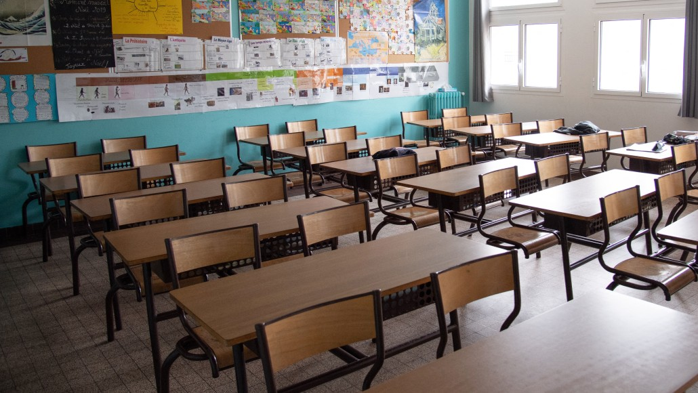

I went to Farmington Woods Elementary School and West Cary Middle School to get to my high school career. I went to Cary High School and graduated in 2019 with a decent gpa. In high school I was in FBLA, Future Business Leaders of America, and competed in events related to strengths that would be useful in businesses. In my Sophmore year, I competed in Public Speaking, and made 5th in states. In my Senior year, I competed in FBL, which is a honor only available to seniors that allow those seniors to create a professional business resume and to be included in a mock business interview. I got 4th in states for FBL. After completing my high school career, I continued my academic career at Wake Technical Community College. I currently finished my Associates of Science and will continue to finish my Associates of Applied Science. My applied science is concentrated to database science. I am on the road to finish this associate in 2024-2025.
